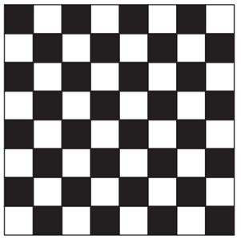
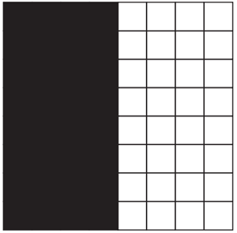

Introducción
La dependencia espacial se basa en que los valores cercanos tienden a parecerse más que los alejados.
En ese contexto, la autocorrelación espacial es el grado en que una variable está correlacionada espacialmente consigo misma.
 
Autocorrelación espacial negativa Autocorrelación espacial positiva